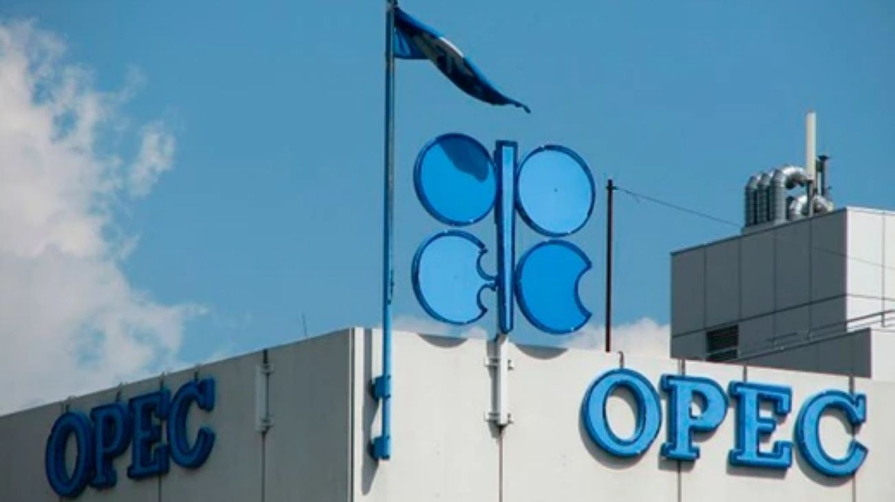

Emiratos Árabes Unidos abandona la OPEP y la OPEP+
Abu Dabi anunció por sorpresa su salida de la organización a partir del 1° de mayo, en medio de la crisis energética desatada por la guerra con Irán y el bloqueo del Estrecho de Ormuz.

Emiratos Árabes Unidos sacudió al mundo energético este martes con el anuncio de su retiro de la Organización de Países Exportadores de Petróleo (OPEP) y de la alianza ampliada OPEP+, con efectos a partir del 1° de mayo de 2026. La noticia, comunicada a través de la agencia estatal WAM sin consulta previa a ningún otro miembro del bloque —ni siquiera a Arabia Saudita—, representa el golpe más contundente que ha recibido el cartel desde su fundación en 1960. El anuncio llegó en un momento de extrema vulnerabilidad energética global: el Estrecho de Ormuz, por donde transita normalmente alrededor del 20% del petróleo y el gas natural licuado del planeta, permanece bloqueado, minado y bajo amenaza constante de Irán desde el inicio del conflicto bélico en la región. El ministro de Energía emiratí, Suhail Mohamed Al Mazrouei, definió la decisión como "política", tomada tras un análisis exhaustivo de los niveles de producción actuales y futuros, después de 59 años de membresía en la organización.
El trasfondo de la ruptura tiene raíces tanto económicas como geopolíticas. En lo económico, las cuotas de producción de la OPEP limitaban a los Emiratos a extraer 3,2 millones de barriles diarios, pese a que el país cuenta con una capacidad real cercana a los 5 millones. Abu Dabi venía resistiendo esa restricción desde hace años por considerarla injusta respecto a su infraestructura y su potencial. Al salir del cartel, queda libre de esas ataduras y puede expandir su producción a voluntad. En lo político, las relaciones entre los Emiratos y Arabia Saudita se habían enfriado notablemente, con disputas por cuotas, por inversiones extranjeras en la región y por la percepción emiratí de que sus socios del Golfo no hicieron lo suficiente para protegerlos frente a los ataques iraníes. El asesor diplomático de la presidencia de los Emiratos, Anwar Gargash, lo dijo sin rodeos: los países del Consejo de Cooperación del Golfo mostraron, en plena guerra, "la posición más débil de toda su historia".
El impacto en los mercados fue inmediato. El crudo Brent superó los US$104 por barril, impulsado por la incertidumbre sobre qué hará Abu Dabi con su capacidad liberada y por el temor a una guerra de precios entre los Emiratos y Arabia Saudita. La salida del tercer productor más importante del bloque reduce el control de la OPEP sobre la oferta mundial del petróleo del 30% al 26%, erosionando su poder de negociación frente a los grandes importadores asiáticos y frente a Estados Unidos, que en los últimos años había avanzado fuertemente con su propia producción de shale. Analistas advierten que si otros miembros con aspiraciones de expansión —como Kazajistán o incluso Venezuela— siguen el ejemplo emiratí, el cartel podría enfrentar un proceso de desintegración progresiva que rediseñe por completo el mapa energético global.
Para Argentina, la noticia no es menor. El país viene apostando fuertemente al desarrollo de Vaca Muerta como plataforma exportadora de petróleo y gas, y un escenario de mayor volatilidad en los precios internacionales del crudo —combinado con el bloqueo del Estrecho de Ormuz— puede representar tanto una oportunidad como un riesgo. Si los precios del Brent se sostienen por encima de los US$100, las exportaciones energéticas argentinas se potencian y el ingreso de divisas mejora. Pero si la salida emiratí desencadena una guerra de precios que derrumbe las cotizaciones, el cálculo cambia radicalmente. El mundo energético entró en una nueva era este martes, y Argentina tendrá que navegar sus consecuencias.